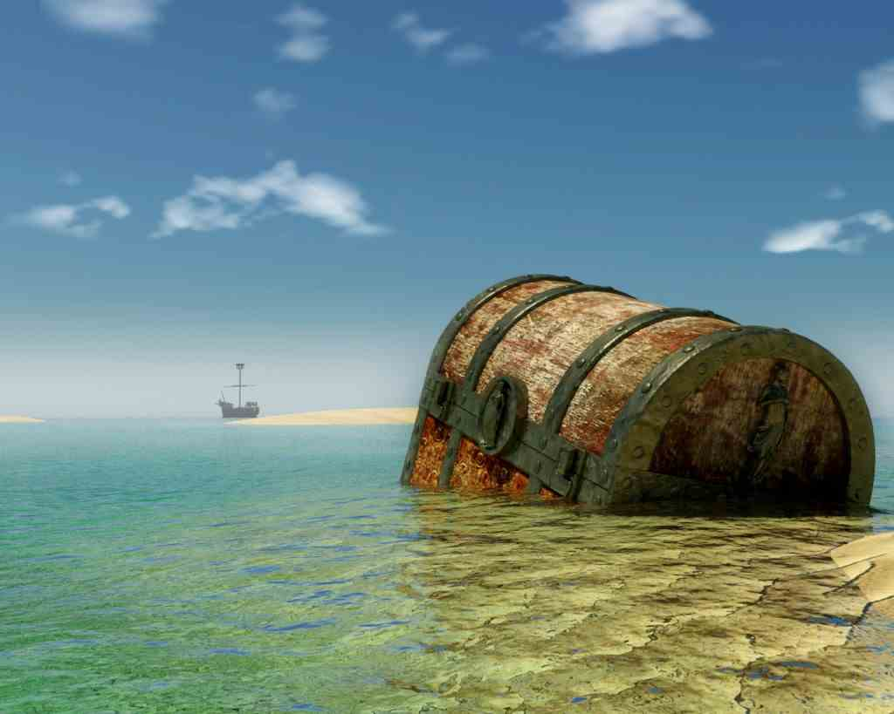
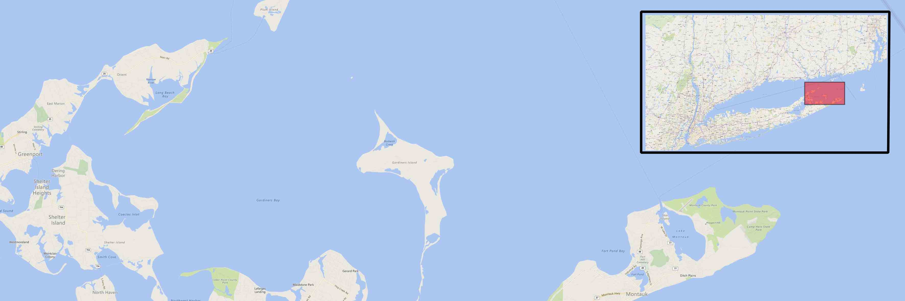
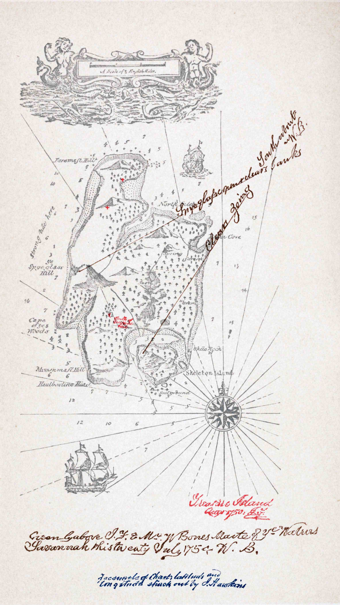

Robert Louis Stevenson’s most famous book, Treasure Island, was published in 1883 and almost immediately inspired the romantization of pirates in western culture. Whether it be a novel, a Disney movie or a Halloween costume, we share a similar image of pirates and treasures.
This article will dispel or confirm some of the more popular myths about pirates.
Pirates flew the Jolly Roger, wore eyepatches, kept parrots as pets, and had peg legs. Those characteristics are likely to be true. There’s evidence that the famous skull-and-crossbones flag was flown by many pirates (in different variations), after they took down the national flag that had lured their prey close enough to capture. There are accounts of parrots being kept as pets by some pirates, and, given the nasty business piracy was, it’s quite likely that some needed eyepatches and had peg legs due to injuries.
Did pirates make their victims walk the plank? There’s no evidence this was done much, if at all. Pirates’ preferred means of punishment was tying their victims to a rope and dragging them under the ship.
Pirates didn't really bury their treasure so that no one else could find it. This might have happened, but was the exception, not the rule. Pirates didn’t expect to live very long, considering the business they were in, so planning for the future wasn’t high on their list of concerns. There is only one confirmed case of burried treasue, the treasure of Captain William Kidd (1645-1701). William Kidd was a Scottish sailor who was tried and executed for piracy. His gold and treasures, worth around 20,000 pounds (more than $1 million in today’s value) were dug up on Gardiner’s Island off the coast of Long Island, NY.
Gardiner’s Island, Long Island, NY:
Since there were no buried treasures, there were no treasure maps with X marking the spot. There’s no evidence this was ever done. Our idea of a treasure map stems from Robert Louis Stevenson’s famous treasure map. Stevenson conceived the idea of Treasure Island from a map of an imaginary, romantic island idly drawn by him and his stepson on a rainy day in Braemar, Scotland. Stevenson had just returned from his first stay in America, with memories of poverty, illness and adventure.
Robert Louis Stevenson’s treasure map:
